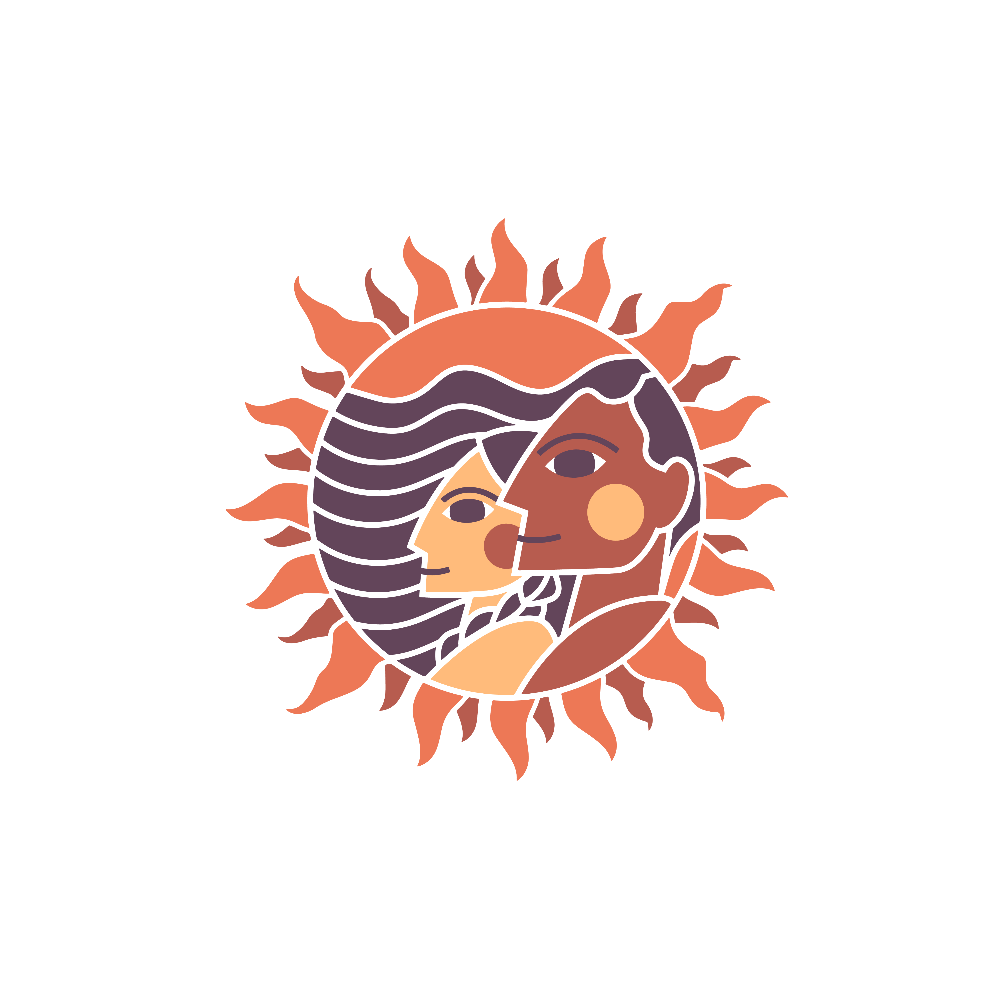

Hover over photos to learn more about these moments (if on mobile, press and hold image)!
The Natural History Museum collaborated with GEM as a part of our Rethinking Migration Series. This event was open to the public and our Girasoles were able to shine as storytellers and showcase their work. The Girasoles had the task of reconnecting with their family and elders to learn about their family’s migration story. They became the storytellers of their family’s journey. Through Zines, portraits, collages, and butterflies, their stories were shared with pride.
One thing the girls love about break time is looking at the fountain at USC. They teach us everyday to enjoy the simple things in life!
The one and only legendary Labor Leader, Mother, Activist, Guerrera and incredible human being. Today was unforgettable and powerful! Happy to have shared this memorable moment in history! Dolores Huerta has always been an inspiration to our Founder. Her activism, drive and GANAS fueled in her the possibility to build, lift and rise together!
Our Girasoles had an opportunity to see the new exhibition Dogs- A Science Tail at the California Science Center! The girls experienced the world the way a dog sees it, hears it and smells it. Through the various exhibitions the girls explored the science behind the biology of these canines.
Attending events like The Women's Empowerment Expo or any growing, empowering, and educational spaces, will encourage this new generation of Niñas (girls) to DREAM BIG and work collaboratively with women and men build a better tomorrow!
Stephanie Beatriz taught the girls that Latinas are strong and do not ever quit, when she last saw them. Today with her actions, she taught them that she is a woman that keeps her word and will find the time from her busy schedule to show the girls her love. The girls were so excited to see and root for General Mayhem, their fierce Shero!

Women are underrepresented in the STEM fields. Only 13% of Engineering jobs are held by women and an even smaller percentage by LATINAS. According to the latest report by National Science Foundation, only 2% of employed engineers are Latina women and 0.1% are Indigenous women. G.E.M wants to change that. Exposure is very important for our girls in order for them to discover new avenues and explore their potential!
First time living the Dodgers experience and being treated like a true VIP!! It was awesome to be taken to Dodger Stadium in their own Dodger Bus, having the DANCE CAM on them, getting their T-shirts and being fed! All of this made last night, a night to remember!
Artist Anna Alvarado shared her story, her love of art, her inspiration and empowered the girls. She highlighted their potential to each one of them!

Our last Yoga lesson with Rosalinda. A Zapotec Yogi with an indigenous origin from Oaxaca. Rosalinda was aware of our Summer Theme: Abuelita Wisdom. Movement to the girls became a connection to nature, their bodies became seeds to channeling the quiet sounds within them.

Thank you Los Angeles Fire Department Station 15! Our Girasoles will never look at a Fire Truck or Fire Engine the same ever again. Fire Fighters Jared Horak, Dennis Lagaspi, and Justin Moore went over all the equipment and tools inside the Fire Truck and Fire Engine and taught the children of its use, importance and safety purpose. They also talked about becoming a Fire Fighter and gave examples of any emergencies that they may be called to do.

Our bi-monthly Tesoro Verde hikes led by our Indigenous Wellness Educator, Veronica Miranda, provide a special learning experience for our GEM families and friends. Through these family hikes, our Girasoles are building relationships, connecting with the earth, and walking in unity.
Our Girasoles enjoyed themselves and learned more about the music of Perú!
.JPG)
Narsiso Martinez is a Oaxacan artist that migrated to the United Stated at the age of 20. His mixed media installations focus on the lives and labor of the migrant agricultural workers. This is a subject he knows well, as he himself worked alongside family and friends to fund his college education. His story is an inspiring! It encourages a call to action to advocate for farmworkers’ rights.
Our Girasoles were invited to the Aquarium of the Pacofic for the Baja Splash Cultural Festival. They created art pieces that reflected their connection with their ancestors, roots, love for the earth, and animals!